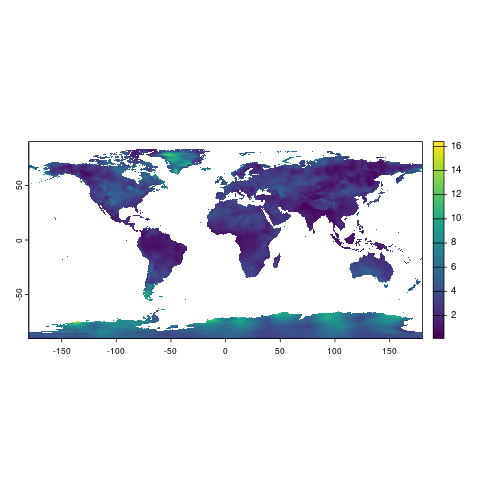

Climatology Lab TerraClimate
Mitchell Manware
2025-08-28
Source:vignettes/terraclimate_workflow.Rmd
terraclimate_workflow.RmdThis vignette demonstrates how to download, process, and calculate
covariates from the Climatology Lab’s TerraClimate
dataset using amadeus functions. Details are provided for
each function’s parameters and outputs. The examples utilize monthly
wind speed data. See https://www.climatologylab.org/wget-terraclimate.html
for full variable names and acronyms. The messages returned by
amadeus functions have been omitted for brevity.
Download
Start by downloading the netCDF data files with
download_data.
-
dataset_name = "terraclimate": TerraClimate dataset name. -
variable = "Wind Speed": wind speed variable name. -
year = c(2021, 2022): years of interest. -
directory_to_save = dir: directory to save the downloaded files. -
acknowledgement = TRUE: acknowledge that the raw data files are large and may consume lots of local storage. -
download = TRUE: download the data files. -
remove_command = TRUE: remove the temporary command file used to download the data. -
hash = TRUE: generate unique SHA-1 hash for the downloaded files.
dir <- tempdir()
amadeus::download_data(
dataset_name = "terraclimate",
variable = "Wind Speed",
year = c(2021, 2022),
directory_to_save = dir,
acknowledgement = TRUE,
download = TRUE,
remove_command = TRUE,
hash = TRUE
)[1] "344cddba906371b701f661ccebeef3f427b2d8ec"Check the downloaded netCDF files.
list.files(dir, recursive = TRUE, pattern = "ws")[1] "ws/ws_2021.nc" "ws/ws_2022.nc"Process
Import and process the downloaded netCDF files with
process_covariates.
Parameters:
-
covariate = "terraclimate": TerraClimate dataset name. -
variable = "Wind Speed": wind speed variable name. -
date = c("2021-12-28", "2022-01-03"): date range of interest. -
path = paste0(dir, "/ws"): directory containing the downloaded files.
ws_process <- amadeus::process_covariates(
covariate = "terraclimate",
variable = "Wind Speed",
date = c("2021-12-28", "2022-01-03"),
path = file.path(dir, "/ws")
)Check the processed SpatRaster object.
Note Climatology Lab TerraClimate is a monthly dataset,
so the SpatRaster contains two layers for December 2021 and
January 2022.
ws_processclass : SpatRaster
dimensions : 4320, 8640, 2 (nrow, ncol, nlyr)
resolution : 0.04166667, 0.04166667 (x, y)
extent : -180, 180, -90, 90 (xmin, xmax, ymin, ymax)
coord. ref. : +proj=longlat +ellps=WGS84 +no_defs
sources : ws_2021.nc
ws_2022.nc
varnames : ws (wind speed)
ws (wind speed)
names : ws_202112, ws_202201
unit : m/s, m/s
time (days) : 2021-12-01 to 2022-01-01
terra::plot(ws_process[[1]])